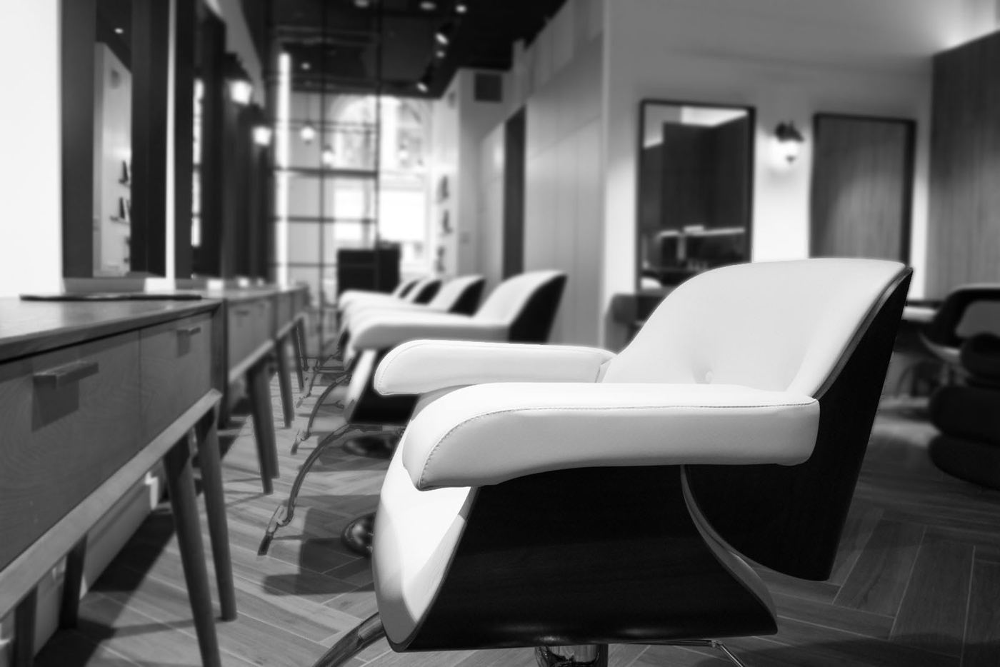
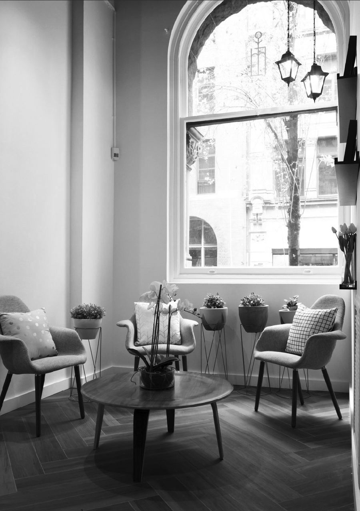

Boutique Japanese salon · Clarence Street, Sydney
Natural, beautiful,
easy to maintain.
Japanese hair technology and products, in the hands of some of Sydney’s most seasoned Japanese stylists. Near the QVB.
Our stylists
Three pairs of hands.
- YoshikoCreative Director
- NobukoTop Stylist
- SatoruTop Stylist
About Yoshiko
Yoshiko has over 20 years of experience in both Australia and Japan. The hallmark of her design is natural, beautiful, healthy hair that is easy to maintain. Before coming to Australia she was a key founding member of one of the top salons in Japan, and before establishing Lamp Hair she was design director at one of Sydney’s most popular Japanese salons.

Hair philosophy
Leave relaxed. Look like yourself, at your best.
Hair care that focuses on quality and innovation, to bring out the best in your natural features. Nourishing treatments in a calming environment.
- SpazioShampoo chairs from Japan, for a comfortable spa shampoo
- ProductsChristophe Robin, John Masters Organics
- Every cutShampoo and blow dry, then a shoulder and head massage

Where to find us